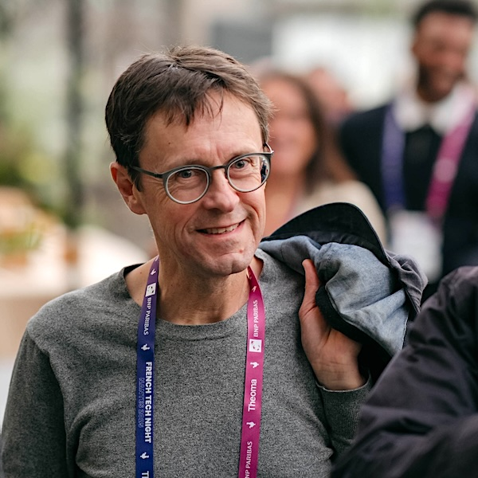
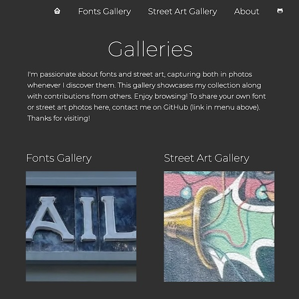

Product & Design Leader B2B
Romuald Tisserand
J'ai piloté la stratégie produit d'un ERP SaaS pour les pharmacies d'Afrique subsaharienne qui a conquis 5 % de son marché en 2 ans (7 pays).
Avant ça, j'ai lancé une application Android de gestion logistique et un éditeur graphique d'étiquettes SaaS.
De la stratégie produit à l'exécution terrain, je transforme des besoins métier en solutions qui créent de la valeur.
01
Projets sélectionnés
Pro
Meditect
2021 – 2024Digitaliser la santé en Afrique subsaharienne, en commençant par les pharmacies.
5 % du marché · 7 pays · en 2 ansDeep-dive →

PersoGalleries
2023 – présentPhotographier des typographies et du street art, et faire une galerie virtuelle pour les présenter.
Deep-dive →
02
De la tech au produit
15 ans
De la tech…
Après 15 ans dans des fonctions techniques (Dev, DevOps, Infra), j'ai opéré une transition vers le product management et le design.
Depuis 2017
…au produit
Je définis vision et stratégie produit, et pilote leur exécution, de la discovery terrain jusqu'au déploiement.
03
Vision & stratégie → exécution produit
Double casquette produit/design + background tech pour :
- Définir la vision en lien avec les objectifs business
- Aligner les parties prenantes sur cette vision
- Arbitrer entre opportunités marché et impact business
- Piloter des équipes cross-fonctionnelles vers l'impact
Ma convictionLes meilleurs produits naissent d'une obsession pour l'utilisateur, d'une rigueur méthodologique, et d'équipes alignées sur l'impact.
04